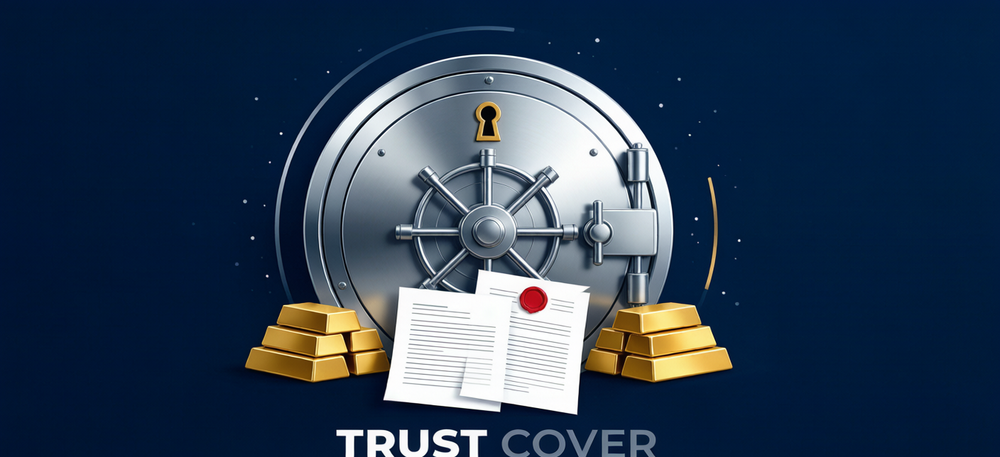
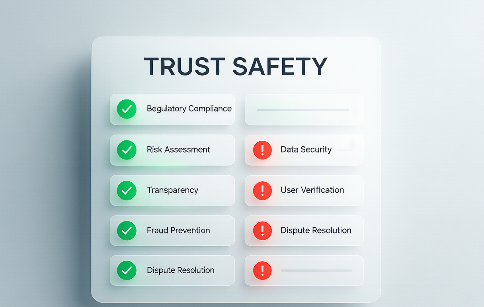
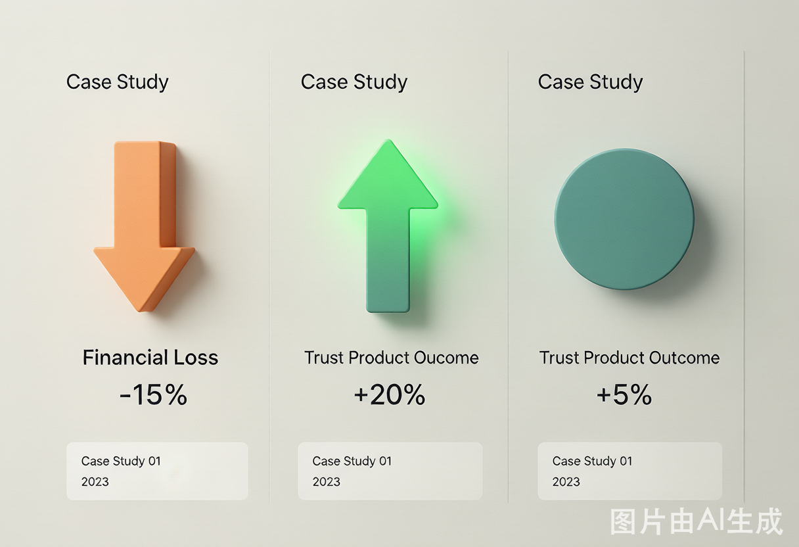

信托产品安全吗？2025年信托风险深度拆解：7个判断指标+3个真实违约案例
2025年信托产品安全深度指南：从安信信托到中融信托的真实违约案例复盘、7个必查安全指标、不同资金量配置方案，附信托公司实力排行和底层资产穿透方法。
**摘要：** "年化收益6%，100万起投，大公司背书"——信托理财经理的话术，听起来很美。但2020-2025年，中国信托业经历了史上最惨烈的出清：安信信托被接管、中融信托爆雷、房地产信托违约超3000亿。本文用三个真实投资者案例+7个安全检查指标，教你如何判断一款信托到底安不安全。

信托到底是什么？为什么100万门槛是"双刃剑"
信托，本质是一个四方契约：**投资者（委托人）**把钱交给**信托公司（受托人）**，由信托公司按约定投向**融资方**，融资方到期后还本付息，信托公司再把钱还给投资者。
100万元的起投门槛源自监管规定——监管的逻辑是：能拿出100万买信托的人，属于"合格投资者"，有足够的风险判断能力和承受能力，不需要像保护银行理财客户那样提供隐性担保。
但这个逻辑有一个致命漏洞：**有100万≠懂投资。** 大量拆迁户、退休教师、个体工商户，辛苦攒了100多万，被理财经理一句"大公司保本"忽悠进去，结果产品违约、血本无归。
三个真实违约案例：100万是怎么亏光的

案例一：周先生（58岁，退休工人）——安信信托血亏120万
**背景：** 2020年初，周先生卖了老家一套房，手上有320万现金。银行理财经理推荐他买安信信托的一款"政信类产品"，年化收益8.5%、期限24个月。经理拍胸脯说："安信是上市公司，产品保本，放心吧。"周先生先后买了3款，总共**320万元**。
**出险过程：** 2020年6月，安信信托因**违规资金池操作、挪用信托财产**等严重违规行为，被原银保监会依法接管。周先生的3款产品全部停止兑付。接托管团队经过2年多的资产清理，最终在2022年底出台兑付方案——按投资金额阶梯打折兑付。
**最终结果：**
- 100万以下部分：兑付80%（回80万）
- 100-300万部分：兑付70%（回140万）
- 300万以上部分：兑付60%（回12万）
- 总计回收：**232万元**，净损失**88万元**（约27.5%本金损失）
**周先生的反思：** "我当时只看收益高、公司名气大，完全不知道信托产品根本不保本。那个理财经理后来找不着人了，我想打官司，发现连律师费都出不起。"
案例二：李女士（42岁，企业中层）——中融信托延期16个月
**背景：** 2022年，李女士经同事介绍买了中融信托的一款工商企业类信托产品，投资**150万元**，年化收益6.2%，期限18个月。中融信托当时是行业龙头，管理规模超6000亿。
**出险过程：** 2023年下半年，中融信托多个产品出现兑付困难。李女士的产品到期日是2024年1月，但到期当天收到通知——"融资方资金周转困难，申请展期12个月"。2025年1月再次收到通知："继续展期6个月"。截至2025年6月，产品仍在延期状态，李女士已等了**16个月**。
**现状：** 产品尚未宣告"违约"，中融信托表示正在处置底层资产。但李女士的150万被锁死，期间没有任何收益。如果拿去存大额存单，2年也该有约8万元利息。算上机会成本，实际损失已超10万元。
案例三：赵先生（55岁，个体户）——踩坑房地产信托
**背景：** 2021年，赵先生买入某头部信托公司发行的房地产信托产品，投资**200万元**，底层资产是某二线城市恒大项目的开发贷款，年化收益7.8%。
**出险过程：** 2021年下半年恒大爆雷，该项目全面停工。信托公司尝试处置抵押物（土地+在建工程），但楼盘无人接盘，最终以评估价的35%拍卖。2024年底完成清算。
**最终结果：** 赵先生的200万，在扣除了处置费用（拍卖费、律师费、评估费）后，实际回收约**78万元**，亏损**122万元**（61%本金损失）。
**行业背景：** 据中国信托业协会数据，2021-2024年房地产信托累计违约金额超过**3,500亿元**，投资者平均本金回收率仅30%-50%。
信托安全与否：7个必查指标（缺一个都别买）
指标一：信托公司综合实力
| 信托公司 | 净资产（2024年） | 监管评级 | 近年重大负面 |
|---|---|---|---|
| 中信信托 | ¥450亿+ | A+ | 无 |
| 平安信托 | ¥380亿+ | A+ | 少量产品延期 |
| 重庆信托 | ¥350亿+ | A | 无 |
| 华能信托 | ¥300亿+ | A | 无 |
| 中融信托 | ¥200亿+（2023年数据） | 曾被降级 | **多产品逾期** |
| 中小信托（50-100亿） | ¥50-150亿 | B/C | 风险较高 |
建议：只选净资产**200亿以上**且监管评级**A级以上**的信托公司。在银保监会官网可查询信托公司名录和许可证。
指标二：融资方信用评级
**硬件要求：** 融资方外部信用评级不低于**AA+**级。如果找不到融资方的公开评级报告，说明它不是发债主体，信息披露不透明——**直接跳过**。
查询渠道：中国货币网（www.chinamoney.com.cn）、上海清算所官网——输入融资方全称即可免费查看最新评级报告。
指标三：担保措施是否"三重保障"
好的信托产品通常有三层保障：
- **资产抵押**：土地、房产抵押，抵押率≤50%（即抵押物估值是融资金额的2倍以上）
- **第三方担保**：最好是AAA级国企或上市公司母公司提供连带责任担保
- **资金监管**：信托公司对资金使用实行封闭监管，确保专款专用
如果一款产品**没有任何担保措施**，或者仅靠"融资方集团担保"（自家担保自家），坚决不碰。
指标四：资金用途是否明确可核查
- ✅ "资金用于成都市轨道交通18号线三期工程机电设备采购"（具体、可验证）
- ❌ "资金用于补充融资方日常经营流动资金"（模糊、无法验证）
如果资金用途模糊，融资方极有可能把资金挪作他用（如还旧债、填补其他窟窿），这就是典型的"资金池"套路。
指标五：预期收益率是否合理
2025年信托行业平均收益率约5.0%-6.0%。如果某产品收益率显著偏高，逻辑很简单：**融资方愿意出这么高的利息，说明它从银行借不到便宜钱——这说明它风险高。**
| 产品收益 vs 行业均值 | 判断 |
|---|---|
| 行业均值±0.5% | ✅ 正常 |
| 高于均值1%-1.5% | ⚠️ 需仔细核查底层资产 |
| 高于均值2%以上 | 🔴 **99%有猫腻，远离** |
指标六：信托经理过往业绩
要求理财经理提供**该信托经理过往管理的同类产品完整兑付记录**（含金额、期限、是否准时兑付）。如果经理含糊其辞或提供不出——这个产品不值得信任。
指标七：是否承诺"保本保收益"
**法律明确规定：信托产品严禁承诺保本保收益。** 如果有人跟你保证"本金安全、收益稳拿"，他正在违法销售。这种产品的底层资产大概率有问题——因为"好资产不需要承诺保本也能卖掉"。
2025年不同类型信托的安全性排序

| 信托类型 | 安全性 | 2025年平均收益 | 核心风险 | 推荐度 |
|---|---|---|---|---|
| 政信类（AAA级平台） | ⭐⭐⭐⭐ | 4.8%-5.5% | 地方政府隐性债务 | 较推荐 |
| 政信类（AA级平台） | ⭐⭐⭐ | 5.5%-6.5% | 区县级财政压力 | 谨慎 |
| 消费金融类 | ⭐⭐⭐ | 5.0%-6.0% | 资产质量劣变 | 有条件推荐 |
| 供应链金融类 | ⭐⭐⭐ | 5.0%-5.8% | 核心企业信用 | 有条件推荐 |
| 房地产类 | ⭐ | 6.0%-8.0% | 项目停工、无人接盘 | **极不推荐** |
| 工商企业类 | ⭐⭐ | 5.5%-7.0% | 融资方经营恶化 | 需穿透分析 |
| 资金池类 | 0 | 不明 | 庞氏骗局 | **绝对不碰** |
数据来源：中国信托业协会2024年度报告、用益信托网统计
常见问题 FAQ
**Q：如果信托产品违约了，我该怎么做？能拿回多少钱？**
A：分三步走——第一步：冷静，不要被理财经理的"再等等"拖延。立即向信托公司书面发函要求说明情况（挂号信留证据）。第二步：同时拨打**12378**（国家金融监督管理总局投诉热线）投诉，监管部门介入后会施压信托公司加快处置。第三步：如果6个月后仍无进展，考虑联合其他投资者委托律师维权。关于本金回收——政信类信托历史回收率70%-100%（但可能延期1-3年）、房地产信托30%-50%、资金池类可能为0。**建议买之前就做好"全亏了能不能承受"的压力测试，而不是出事后再想怎么办。**
**Q：我有200万，是买一只信托还是分散买两只？**
A：坚决分散！信托产品的单只风险极高——一旦踩雷，可能是灭顶之灾。200万建议至少分散到**2-3只不同类型**（如政信+消费金融+供应链金融），每只不超过总资产的30%。且每一只都要独立完成7个安全检查指标——不要因为"同一个信托公司发行的"就降低标准。
**Q：信托产品的收益率一直在降，现在还值得买吗？**
A：收益率下降本身就是市场风险定价回归理性的信号——收益越低的时代，暴雷概率反而越小（因为垃圾资产借不到高息也发不出产品了）。2025年5%-6%的收益率，比大额存单（2.65%）高约3个百分点，但本金亏损风险也显著更高。是否值得买取决于你是否是真正的"合格投资者"——不是光有100万就行，而是你真的明白信托不保本、且能承受10%-30%的本金损失。
*本文数据来源于中国信托业协会2024年度报告、国家金融监督管理总局公开信息、用益信托网统计数据。信托投资存在本金损失风险，过往数据不代表未来表现。*
*本文提及的具体公司名称仅作为案例分析，不构成任何投资建议。购买信托产品前请充分阅读信托合同并评估自身风险承受能力。*